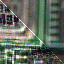
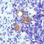

Image Processing Toolbox Demos
Deblurring
Deblurring Images Using the Blind Deconvolution Algorithm

Deblurring Images Using the Lucy-Richardson Algorithm

Deblurring Images Using a Regularized Filter
Deblurring Images Using the Wiener Filter